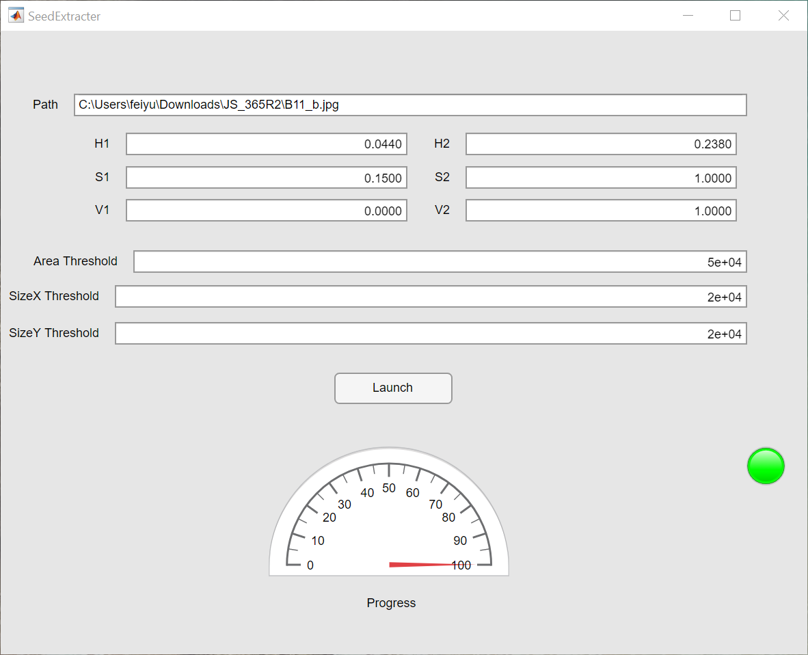

Steps:
1. Type file path
2. Change parameters
2. Execute for all images
Path should be a regular expression for the image files. * can be used to represent characters (e.g. C:\*\Vis_SV_*\*.png).
H1,H2,S1,S2,V1,V2 correspond to ranges of HSV values
